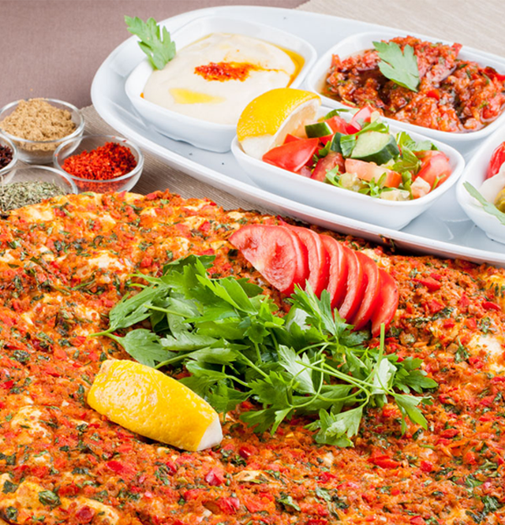

<ion-view>
    <ion-nav-bar class="bar-orange" align-title="center">
        <ion-nav-back-button class="button-light"></ion-nav-back-button>
        <ion-nav-title>
            
        </ion-nav-title>
    </ion-nav-bar>

    <ion-content class="food-card" has-bouncing="false" on-swipe-right="$ionicGoBack()">
        <div class="frame">
            <!-- -->
            
            <span class="food-name">{{vm.card.name}}</span>
        </div>

        <div class="food-button-group">
            <button class="button button-orange food-button" ng-click="vm.selectCard(vm.card.name)">
                SENİ SEÇTİM
            </button>
            <button class="button button-green food-button" ng-click="vm.changeCards()">
                BAŞKA NE VAR?
            </button>
        </div>
    </ion-content>
</ion-view>


